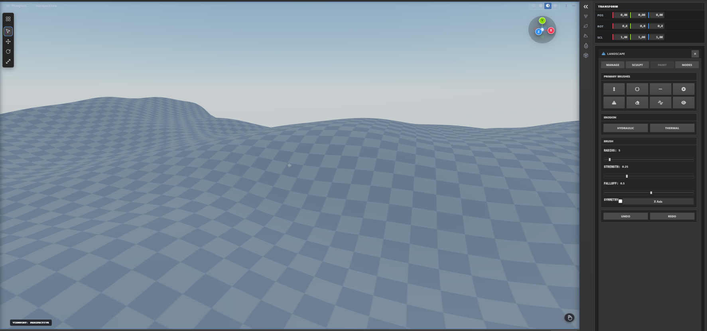

Sculpting & Terrain System
Technical documentation for organic mesh sculpting, dynamic topology, heightfield terrain editing, and vegetation density painting.
Sculpt Mode Overview

Switch to Sculpt Mode from the Mode dropdown menu or press
Ctrl + Tab → Sculpt. Sculpting deforms mesh surface vertices using spherical brush
influence falloffs.
Sculpting Brushes Reference
| Brush Tool | Shortcut | Effect & Behavior |
|---|---|---|
| Draw Brush | X |
Pulls vertices outward along brush normal direction to create raised surfaces or ridges. |
| Clay / Clay Strips | C |
Applies flat strips of clay, ideal for building organic muscle forms and underlying anatomy. |
| Crease Brush | Shift + C |
Pinches vertices inward to carve sharp narrow cuts, wrinkles, and cracks into surfaces. |
| Flatten Brush | T |
Projects vertices onto an averaged plane, flattening peaks and uneven surfaces. |
| Smooth Brush | Shift (Hold) |
Averages vertex positions to eliminate harsh bumps and smooth surface mesh geometry. |
| Grab / Elastic Deform | G |
Pulls a volume of mesh geometry along the cursor vector, stretching shapes like rubber. |
| Pinch Brush | P |
Pulls vertices towards the brush center to sharpen edges and tighten details. |
| Mask Brush | M |
Paints a grayscale mask onto vertices. Masked regions (black) are protected from sculpting operations. |
Dynamic Topology (Dyntopo)
Dynamic Topology automatically subdivides or triangulates mesh geometry locally underneath the sculpt brush stroke. This allows sculpting complex organic forms without requiring pre-subdivided base geometry.
- Detail Size: Controls polygon density (in pixels or absolute units). Smaller values produce finer detail.
- Refine Method: Choose Subdivide Edges (add detail), Collapse Edges (reduce detail), or Subdivide Collapse.
Terrain & Heightfield System
The Terrain Sculpting System uses specialized heightmap displacement brushes for landscape design:
- Raise / Lower: Adjust heightmap elevation.
- Erosion Brush: Simulates hydraulic and thermal erosion patterns on mountain slopes.
- Flatten & Ramp: Create flat plateaus, roads, and smooth slope ramps between two elevations.
- Noise Generator: Applies Perlin/Simplex procedural noise displacement to terrain mesh.
The modern landscape workflow lives in the dedicated Terrain Sculpting workspace — full procedural node generation (Perlin, Ridged Mountains, Voronoi, Volcano…), 10 sculpting brushes and themes. See Terrain Sculpting Workspace.
Vegetation & Foilage Painter
Instantly paint 3D foliage (trees, grass tufts, rocks, flowers) directly onto terrain or mesh surfaces:
- Density & Radius: Controls instance count per stroke.
- Random Scale & Rotation: Adds natural variation in size and Y-axis rotation to painted instances.
- Surface Alignment: Automatically aligns instanced stems to surface normal directions.
The painter is now a full system with procedural grass/tree presets, wind sway shaders and path scattering — see Vegetation Painting.